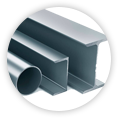
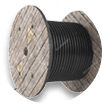
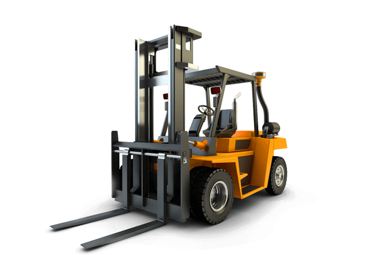

Не всегда привычные решения оказываются эффективными
Вы используете обычный вилочный погрузчик или боковой погрузчик (side-loader) для работы с длиномерными грузами?
Наш многоходовой погрузчик позволит увеличить полезный объем складирования до 100%!
Маневренность четырехходовых погрузчиков Maximal позволит выполнять эффективную и безопасную обработку крупногабаритных и длиномерных грузов в любой отрасли, в частности:
деревообработка/
пиломатериалы
сэндвич-панели

металлопрокат
ПВХ-панели/
ПВХ-профили

кабельная
продукция
Узнайте как, нажав

сравнение с
вилочным погрузчиком

сравнение с
боковым погрузчиком